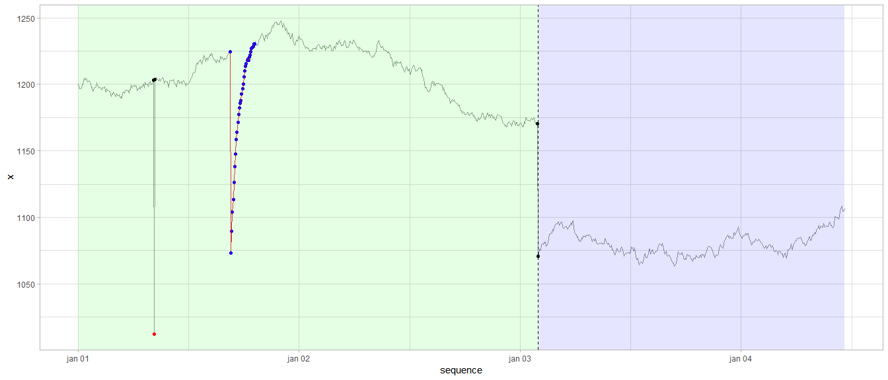

gwloggeR is a R-package for automatic flagging of outliers and drifts in raw air pressure data and outliers, level shifts and temporal changes in raw hydrostatic pressure data. Here is a visual example of the latter:

Keep reading to learn how to start using gwloggeR.
gwloggeR package is not available on CRAN, only on GitHub. The easiest way to install it is to get the released binary with the following command:
install.packages('https://github.com/DOV-Vlaanderen/groundwater-logger-validation/raw/master/gwloggeR/release/bin/win/gwloggeR_0.2.0.zip', repos = NULL)For all released binaries, see the release folder. More information about these releases one can find in the News section.
More experienced users can install from source with the devtools package and referring to the git repository holding the gwloggeR source code:
devtools::install_github("DOV-Vlaanderen/groundwater-logger-validation", subdir = "gwloggeR", ref = "x.x.x")Note the ref = "x.x.x" option. Replace it with the version you want to install. Normally this will be the number of the latest stable release as displayed in the top left corner of this page. By omitting the ref option the latest development version will be installed.
For general use, consult the getting started tutorial.
For advanced understanding, consult the specific vignettes in the Articles section.
Developers and maintainers of this package can find some general guidelines in the Development guide.